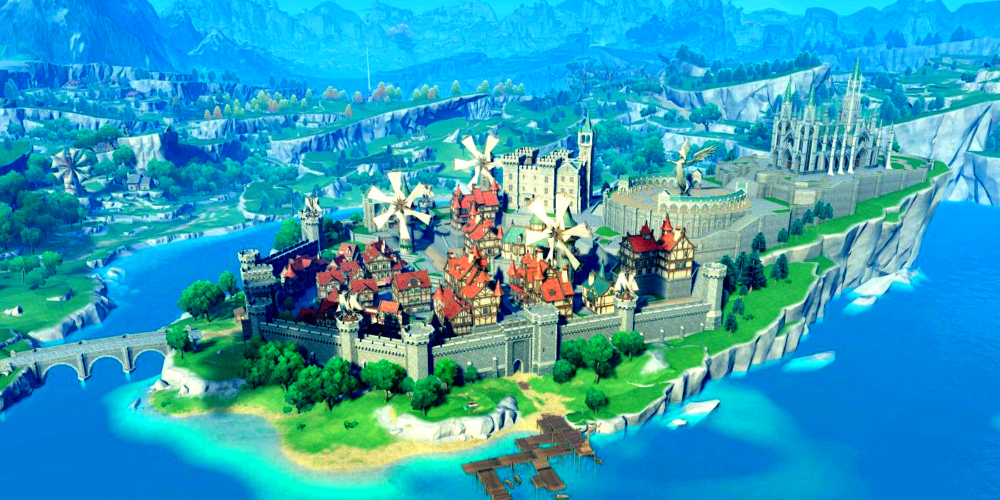
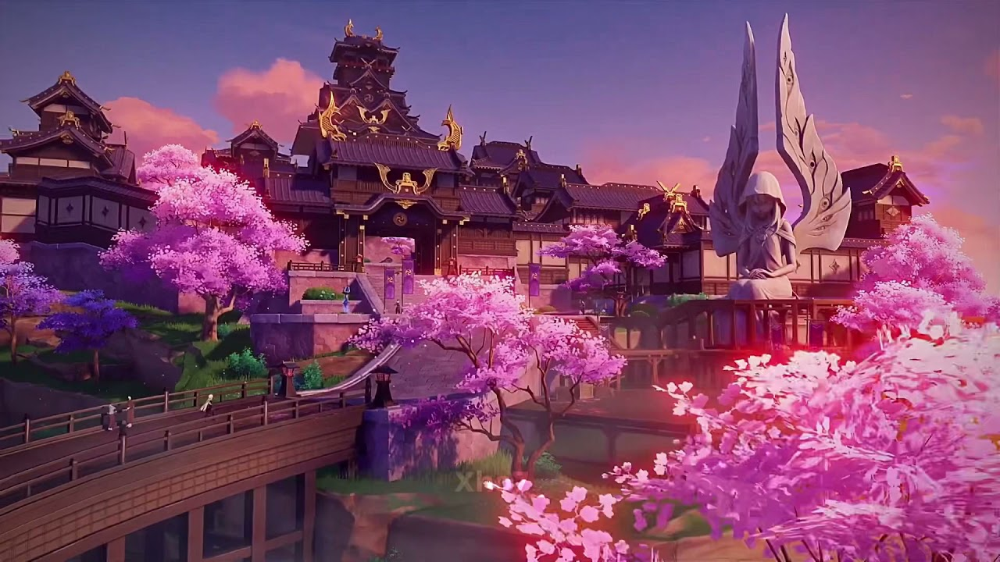
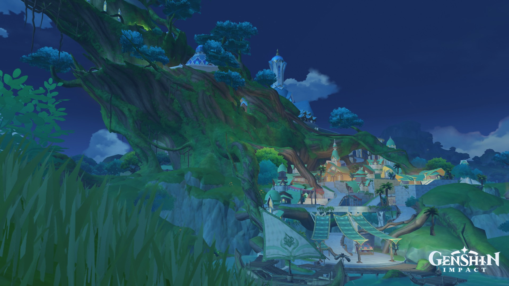
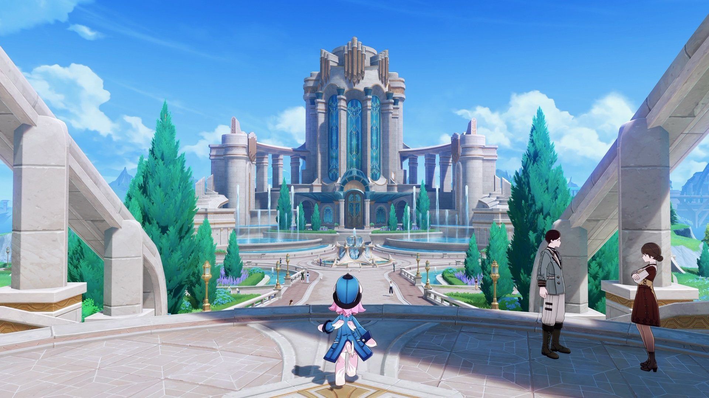

Мондштадт (нем. Mondstadt «Лунный город») — одно из семи королевств Тейвата и первое, куда Путешественник прибывает в поисках своего потерянного близнеца. Это город-государство, который поклоняется Анемо Архонту Барбатосу. В Мондштадте, с самого его основания, ежегодно проводится фестиваль под названием Луди Гарпастум — праздник песен, вина и полёта, длящийся 15 дней.


Одно из семи королевств Тейвата. Это страна поклоняющаяся Гео Архонту. Мораксу или же Властелину Камня, как его называют сами жители Ли Юэ. Действие Тома I и Главы I Промежуточного тома разворачивается в этом регионе.

Название региона «Инадзума» (яп. 稲妻 Inazuma) в переводе с японского означает «молния». Слово «Инадзума» (яп. 稲妻 Inazuma) буквально означает «жена риса». В древней Японии существовало поверье, что грозы, чаще всего бывающие в период созревания риса, производят рис.

Ме́ру (санскр. मेरु), или Сумеру («благая Меру») — священная гора в космологии индуизма, буддизма и джайнов, где она рассматривается как центр всех материальных вселенных. Считается обителью Брахмы и других дэвов.

Фонтейн — одно из семи королевств Тейвата. Это страна, поклоняющаяся Фокалорс, Гидро Архонту и богине Справедливости.